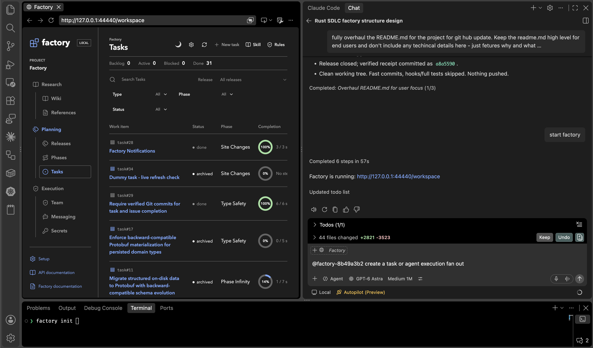

Factory
SWE tools & infrastructure for the agentic era.
Build a software organization around your ideas, with agents as your team. Factory brings the knowledge, roles, and engineering discipline that help one developer lead work at a larger scale.
- Local first
- Minimal by design
- Agent first. Human interpretable.
Install Factory
Checking release...Linux x86-64 and macOS. No Node.js, Rust toolchain, or hosted Factory account required.
curl -fsSL --proto '=https' --tlsv1.2 https://farazshaikh.github.io/factory-dist/install.sh | bashInspect the installer before running it. It selects your platform automatically; no sudo, Node.js or Rust is required. The installer requires OpenSSL or compatible LibreSSL, verifies the pinned publisher's archive signature before execution, then validates the current signed update feed. The installer script itself is trusted through HTTPS; inspect it before use. Existing managed installations use signed update staging and are not restarted.
Manual installation
Download the archive and install descriptor for your platform into the same directory, then run these commands there in bash.
Use the curl installer above for signature verification before execution. Running an extracted binary directly skips that pre-execution check; the browser does not verify publisher signatures.
Existing managed installations should use factory update check, factory update stage and factory update apply for signed updates. No sudo is used.
Start a project
export PATH="$HOME/.local/bin:$PATH"
cd /path/to/your/project
factory init --name "My Project"
factory serve webOpen localhost:44440/workspace after starting Factory.
Packages
| Platform | Architecture | Package |
|---|---|---|
| Linux | x86-64 / glibc 2.35+ | Archive / Install descriptor |
| macOS 12+ | Apple Silicon | Archive / Install descriptor |
| macOS 12+ | Intel | Archive / Install descriptor |
These packages are not Apple-notarized. macOS may require explicit approval in Privacy & Security. TUF target hashes and signatures
Factory in action
Research / planning / execution
Open Specification
Factory's operations, storage formats, and integration contracts are defined through JSON schemas, types, and constraints. Any client can implement the specification to work with Factory, provided it conforms to the published contracts.
- HTTP API / OpenAPI
- Domain types / JSON Schema
- Repository layout
- Record envelope / Protobuf
- Domain records / Protobuf
- Persistence constraints
Specification licensing and binary distribution terms are pending owner approval. Availability of a specification does not grant a license to Factory's implementation.